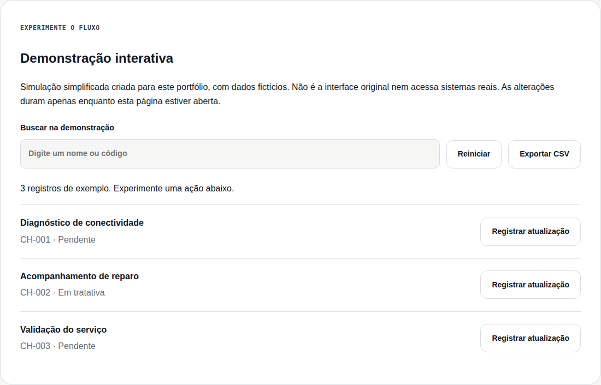
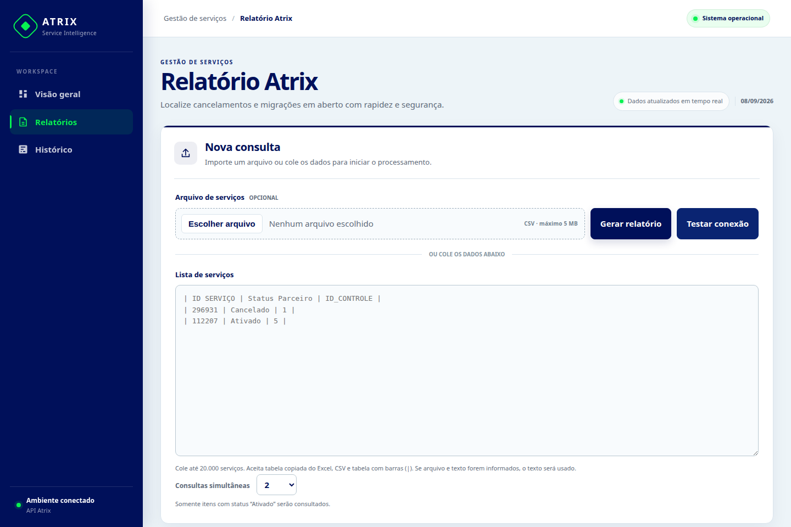
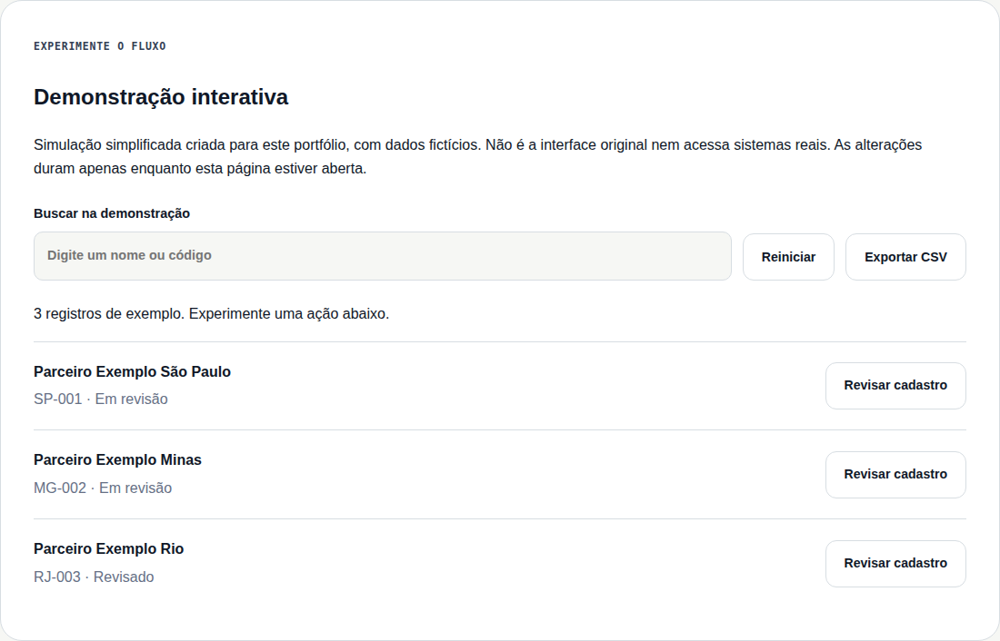
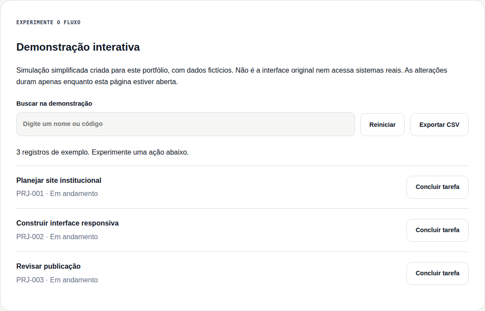

Sites sob encomenda
Sites institucionais, portfólios e páginas para apresentar seu negócio, com layout responsivo e contato acessível.
Sou João Victor. Crio sites sob encomenda e sistemas em PHP, MySQL e JavaScript, com a experiência de quem conhece operações de telecom. Atendo remotamente em projetos e consultoria de tecnologia.
Da operação real para soluções que cabem na rotina.
Minha base profissional foi construída em ambientes onde disponibilidade, prazo e comunicação importam de verdade.
Na telecomunicação, aprendi a investigar falhas, coordenar tratativas e acompanhar chamados do início ao fim. No desenvolvimento, transformo essa visão em aplicações para gestão, automação, relatórios e integração de dados.
O resultado é um perfil que conversa com a operação e com o código — atento tanto à experiência de quem usa quanto ao que mantém o sistema seguro e sustentável.
Sites institucionais, portfólios e páginas para apresentar seu negócio, com layout responsivo e contato acessível.
Ferramentas para organizar cadastros, acompanhar processos e transformar dados em relatórios úteis.
Diagnóstico de necessidades e orientação em tecnologia, conectando experiência de infraestrutura e desenvolvimento.
Dois projetos em destaque e outras soluções para gestão. Explore os casos e experimente os fluxos com dados fictícios.

Prévia da demonstração · dados fictíciosUma central reúne timers, alertas, responsáveis, transferências e registros de atualização.
O que resolve: Acompanhar prazos e repassar chamados entre analistas exige manter contexto e histórico em cada mudança de turno.

Interface real · captura localA aplicação recebe CSV ou tabela colada, consulta a API e organiza os resultados para exportação.
O que resolve: Conferir serviços e reunir informações de cancelamento ou migração envolve consultas repetidas e consolidação de relatórios.

Prévia da demonstração · dados fictíciosPortal com filtros, cadastro, importação de planilhas, exportação e acesso por perfis administrativo, financeiro e comercial.
O que resolve: Cadastros e informações de parceiros precisam ser consultados e atualizados por equipes com diferentes responsabilidades.

Prévia da demonstração · dados fictíciosDashboard com projetos, tarefas, ciclos, histórico e cronograma em Gantt ou agenda.
O que resolve: Projetos, tarefas e prazos dispersos dificultam identificar o que precisa de atenção e quem é responsável por cada entrega.
Um perfil técnico com visão de ponta a ponta.
Minha principal força está na interseção: contexto operacional suficiente para fazer as perguntas certas e repertório de desenvolvimento para construir a resposta.
Monitoramento, diagnóstico e coordenação de incidentes em ambientes corporativos.
Interfaces responsivas conectadas a back-ends com persistência e autenticação.
Fluxos que conectam arquivos, APIs e relatórios para reduzir trabalho manual.
Cuidados práticos para entregar aplicações mais confiáveis e publicáveis.
Suporte, infraestrutura, pessoas e, agora, software.
Evolução por funções de suporte, análise de redes e operação técnica, acompanhando incidentes, equipes parceiras e níveis de serviço.
Operações técnicas e suporte B2B com parceiros de campo.
Suporte pleno em falhas massivas, backbone e incidentes críticos.
Monitoramento GPON, manutenção e ações corretivas e preventivas.
Diagnóstico e manutenção de hardware e software, configuração de sistemas e atendimento direto às necessidades do cliente.
Aulas teóricas e práticas, suporte a alunos e manutenção dos equipamentos usados no ambiente educacional.
Sites sob encomenda, consultoria de tecnologia e sistemas para organizar sua operação. Atendimento remoto e disponibilidade total. Também estou aberto a vagas remotas de desenvolvimento júnior. Conte sua ideia, o prazo e o que você precisa resolver.